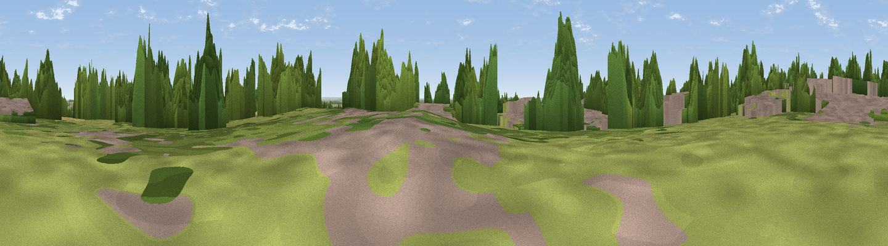

Haddenham village
#42039 in England · top 38% of its area beats it · near Haddenham · path 105 mWhere it is
The exact computed spot (TL 46713 75209). Click the marker for map links.
Public access: the nearest public right of way is about 105 m away — the final stretch may cross private land. Computed from Natural England's CRoW access layer and OpenStreetMap rights of way — not the legal definitive map. Always verify locally.
The view, rendered

A 360° render of this exact spot computed from the terrain model, tree cover and land cover — summer colours, afternoon light, calibrated against photographs of famous viewpoints. Real trees, hedges and buildings will differ in detail.
The panorama
Grey silhouette: terrain skyline in each direction (720 bearings, Earth curvature and refraction included). Dashed green: skyline with trees (+15 m) and buildings (+8 m) as obstacles. Blue strip: how far the ground is visible on each bearing.
Where the view opens
Wedge length = distance to the farthest visible ground on that bearing (vegetation-aware). Rings at 10, 25 and 50 km.
What fills the view
40% cropland · 23% grassland · 21% woodland · 16% built-up
Angular shares of the visible panorama (visual magnitude), not map area. Landscape diversity 0.58 (0–1 Shannon).
Key numbers
More beautiful places nearby
The staircase of upgrades: each row has a higher view potential than everything closer. Driving times are estimates from straight-line distance, calibrated against real road routing — check an actual route before setting out.
| Place | Direction | Drive | Score |
|---|---|---|---|
| Viewpoint near Coton | SSW · 19 km | ~32 min | 37.9 |
| Cambridge high point | S · 21 km | ~35 min | 43.6 |
| Viewpoint near Stapleford | S · 22 km | ~37 min | 52.9 |
| Viewpoint near Royston | SSW · 37 km | ~56 min | 56.6 |
| Viewpoint near Hexton | SW · 57 km | ~79 min | 65.4 |
| Beacon Hill | SW · 77 km | ~101 min | 74.1 |
| Viewpoint near Halton | SW · 87 km | ~111 min | 74.3 |
| Coombe Hill Monument | SW · 92 km | ~116 min | 75.5 |
52.35531, 0.15284 · source: dobih hill · position refined by local search. Computed location — check access rights before visiting.